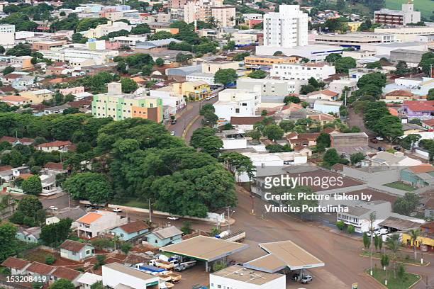
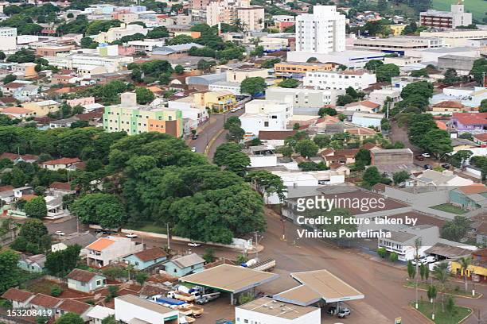
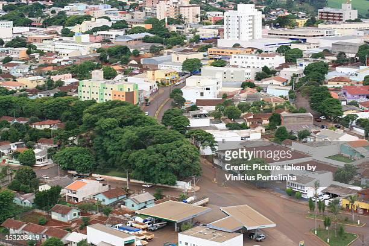
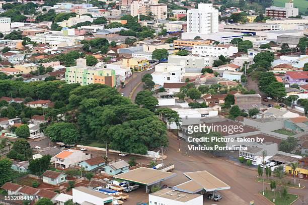

Outrora povoada pelos índios Guaranis, a região da atual cidade de Ivaiporã foi colonizada por brasileiros de várias regiões do Brasil, na década de 1940. Estes pioneiros tinham como principal atividade, a criação de porcos e a exploração de madeira, principalmente os colonos oriundos de Santa Catarina (estes descendentes de ucranianos, poloneses, italianos e alemães). Por outro lado, os pioneiros oriundos de Minas Gerais, São Paulo e Bahia, investiram na agricultura, principalmente na plantação do café. Mais tarde, a empresa "Colonizadora Ubá" recebeu a autorização de exploração das terras e organizou minifúndios, transformando a região num dos últimos eldorados do Paraná.[6] Na década de 1970, com o título de "capital mundial do milho", a cidade tinha como referências econômicas, a exploração de plantio de cereais, como o feijão, o milho, além do algodão, entre outros, sendo aberta várias cooperativas.[6] Em 1951, era conhecida como Distrito de Ivainópolis, recém desmembrada do distrito de Manuel Ribas e incorporado ao município de Pitanga. Em 1955, tornou-se distrito da cidade de Manoel Ribas, quando passa a ser denominada de Ivaiporã.[6] No século XX, a colonização A região do município de Ivaiporã iniciou seu ciclo colonizador por volta da década de 40, quando as terras, consideradas as mais férteis do País, passaram a atrair a atenção de desbravadores que vieram de todas as regiões brasileiras. Passamos pelos ciclos dos safristas de porcos, da madeira e desenvolvemos uma agropecuária das mais prósperas do país. No mapa político, Ivaiporã emancipou-se do município de Manoel Ribas, que emancipou-se de Pitanga, que emancipou-se de Guarapuava. Do sul vieram colonos, muitos deles de Santa Catarina, descendentes de italianos, alemães, ucranianos, poloneses. Por outro lado, do norte vieram paulistas, mineiros, baianos na abertura da fronteira do café. Ivaiporã é um ponto de encontro de culturas de sulistas e nortistas, onde se encontra o vanerão e o forró. Com um plano de colonização moderno, adotado pela Colonizadora Ubá, com uma estrutura agrária estruturada em minifúndios, Ivaiporã foi um dos últimos eldorados do Paraná. Na década de 1970, chegou a ser referência como maior produtora nacional feijão, algodão, etc. Chegou mesmo a ser chamada de capital mundial do milho. Com a inserção de grandes cooperativas a região hoje tem níveis invejáveis de produção e produtividade agrícola. A pecuária, especialmente a bovinocultura de leite tem papel importante na economia rural da região. Ivaiporã hoje é pólo regional. Primeiramente pela dinamicidade de seu comércio e do setor de serviços. Muitos órgãos da administração estadual e federal têm escritórios em Ivaiporã. Tudo isso faz com que a cidade receba milhares de pessoas cotidianamente.